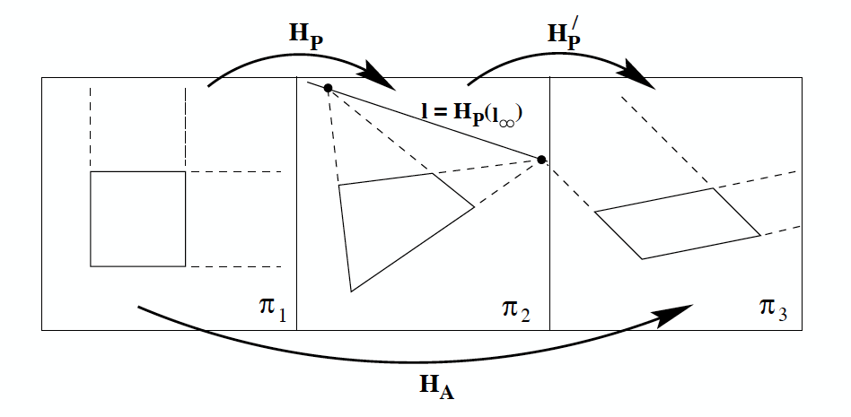
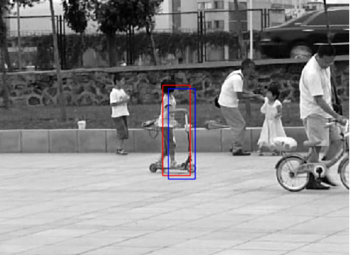

Assignments and Problem Sets
-
Assignment 1: Homography
Augmented Reality with Planar Homographies.
Due Date: 09/16/2024 (Mon), 11:59pm ET
-
Assignment 2: Lucas-Kanade Tracking
Motion detection and Object tracking
Due Date: 10/2/2024 (Wed), 11:59pm ET
How to submit Homeworks (HW)?
- Homework is submitted through the Gradescope Assignments page.
- Homeworks are due by 11:59pm EST on the given due date.
- You are required to typeset all answers (no handwritten responses) and submit as a PDF
- You must assign individual pages of your PDF to individual questions in gradescope. Not doing so will dock your point total by 3%.
-
Submissions must be in the form of:
- a PDF containing the write up including screen grabs of image outputs and copies of code snippets when requested
- a zip file containing the code.
Late Policy
- Each student has a total of 6 late-day points for the course.
- You can extend an assignment deadline by one day using one late-day point.
- Rules for the late-day points are as follows:
- A maximum of 3 late-day points are allowed for the same assignment. If the submission is late by more than 3 days, it will be graded as 0%.
- There are no partial late days (5 minutes late = 1 late day)
- Late-day points CANNOT be used for HW6. HW6 has a hard deadline of its assigned due date.
- If all late-day points are used up, late homework submissions will be graded with 20% deduction for each additional late day (maximum score of 80% after one day, 60% after two days, 40% after 3 late days, etc). If the submission is late by more than 3 days, it will be graded as 0%.
Study Groups
- Students are encouraged to host study groups for extra credit.
- To receive extra credit, study groups must be listed on this Google spreadsheet.
- To receive extra credit, at least 4 people must attend the study group.
- Hosts will receive extra credit (up to 3%).
Academic Integrity & Collaboration
- Homeworks can be discussed, but each student must independently write up their own solutions.
- In particular, no sharing of code with other students.
- It is fine to use reference materials found online, but do not search for homework solutions.
- If you are stuck, you are encouraged to ask questions at both office hours, in Piazza, and to discuss the homework concepts with other students.
- We have seen attempts at cheating in the past.
- If we spot any cases of cheating, we will prosecute to the fullest extent.